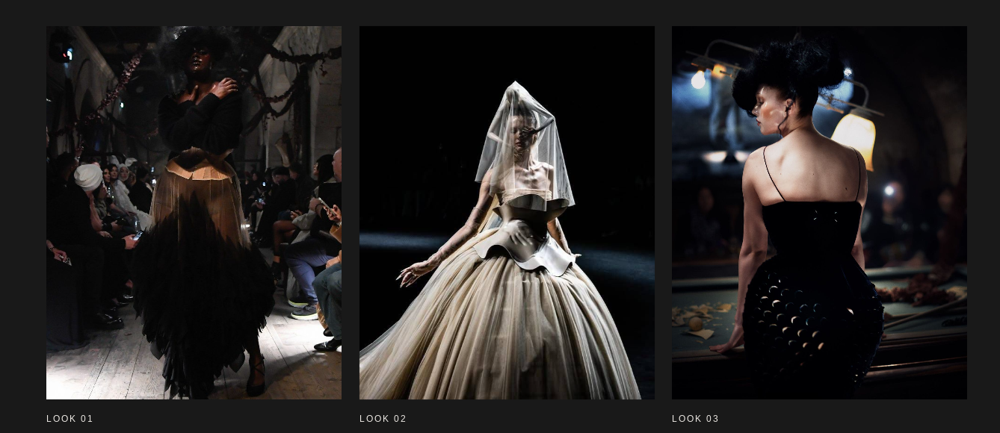
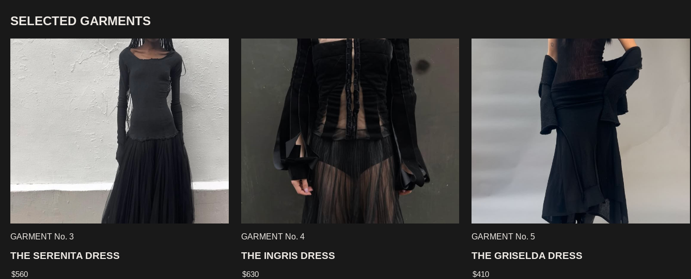
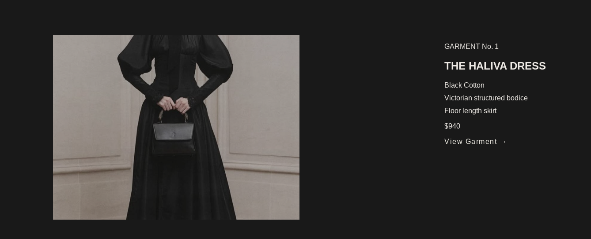
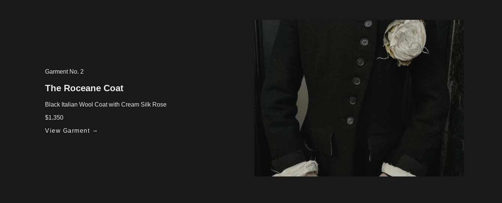
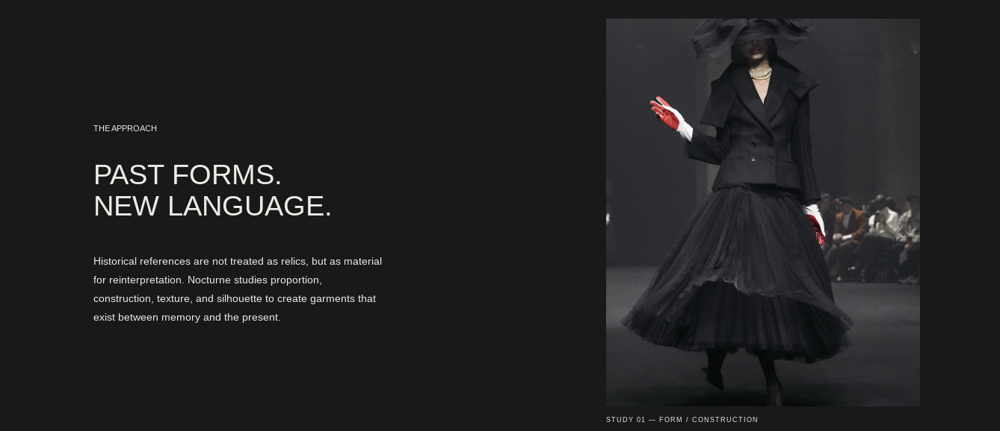
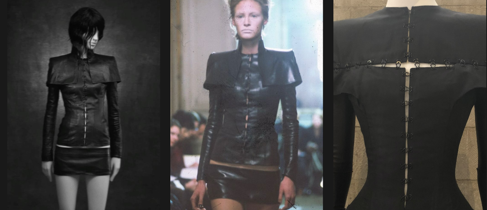
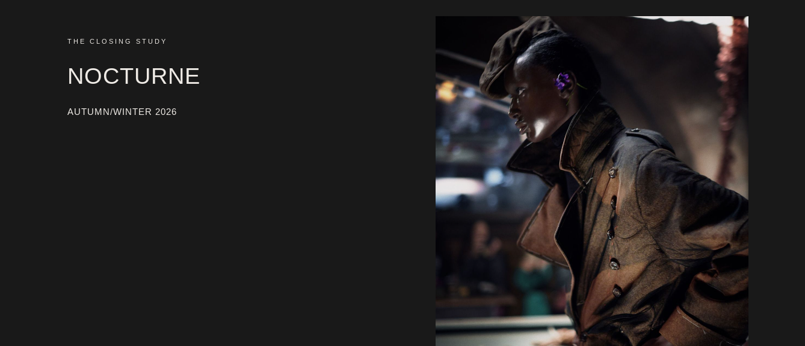

PROJECT / 02
2026
NOCTURNE
A fictional fashion maison and editorial website exploring historical silhouette, romance, structure and modern reconstruction.

PROJECT OVERVIEW
FASHION +
DIGITAL EDITORIAL
Nocturne was developed as a fictional fashion maison with a visual language rooted in historical dress, dramatic silhouette and contemporary editorial design.
The website uses restrained typography, large-scale imagery and generous negative space to create a digital experience that feels closer to a fashion publication than a traditional online store.
01
COLLECTION EXPERIENCE
GARMENTS +
EDITORIAL GRID


The collection experience was designed around a restrained editorial system, allowing each garment and silhouette to remain the primary visual focus.
02
PRODUCT EXPERIENCE
INDIVIDUAL
GARMENT PAGES


Individual garment pages pair large-scale fashion imagery with minimal product information, creating a presentation that feels refined, quiet and editorial.
03
ARCHIVE + EDITORIAL
BUILDING
THE MAISON


Historical references, archival imagery and maison storytelling extend the project beyond individual garments and create a wider fictional fashion world.
04
EDITORIAL DIRECTION
THE CLOSING
STUDY

The closing study acts as a final editorial moment for the collection, reinforcing the maison's emphasis on atmosphere, silhouette and visual storytelling.
PROJECT OUTCOME
FASHION AS A
DIGITAL EXPERIENCE.
Nocturne became an exploration of how fashion imagery, typography and front-end development can work together to create a restrained and immersive editorial website.
VIEW LIVE SITE →